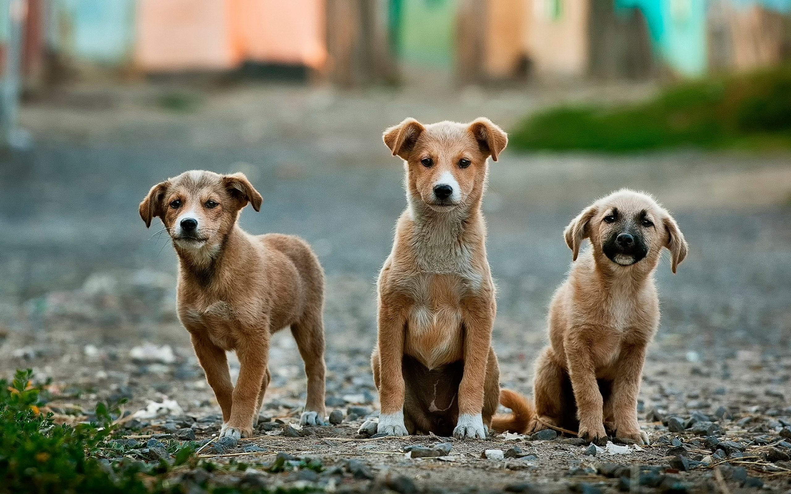
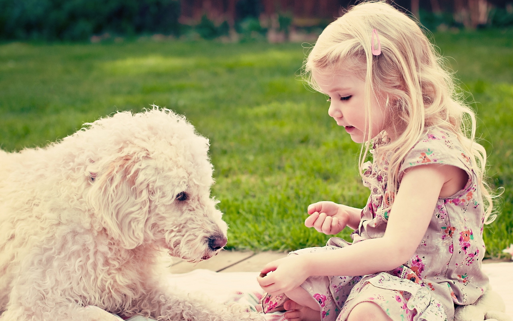

Avaliar o porte do animal. Cães de grande porte precisam de muito espaço para correr e liberar sua energia, portanto é
importante considerar o tamanho do quintal antes de adotar um novo amigo.
Ajudar o filhote a se hambientalizar ao seu novo lar, lhe designando uma rotina de onde dormir, comer e fazer suas necessidades. Ensiná-lo
a se comportar quando pequeno faz com que ele se torne um cão obediente no futuro.
Ter consciência de que um novo animal significa mais gastos para a família. É importante se preparar para arcar com os custos de sua ração,
sua casinha, seus banhos e vacinas.
Last updated 3 mins ago

Saúde e Bem-Estar
É necessário se comprometer com a vacinação de seu novo animal. Ela mantém o cão saudável e livre de parasitas, assim como garante que a segurança das pessoas que vivem com ele.
A castração de fêmeas e machos é recomendada caso não se deseje que o animal dê cria. Assim, é preciso se organizar para a cirurgia e pós operatótio do cãozinho.
Banho e tosa estão incluidos no pacote! Se seu peludo passeia regularmente, eles serão mais frequentes.
Last updated 3 mins ago

Ele precisa de atenção!
Filhotes e crianças são a perfeita combinação! Ambos estão cheios de energia e gostam de brincar. Tenha em mente que seu animal necessita
de muita atenção e interação
Passear com seu peludo é de extrema importância para que ele tenha contato com outros ambientes, animais e pessoas. Cães de grande porte são os mais necessitados de exercício físico.
Animais não são brinquedo. É importante ter condições de bancá-los e amá-los por longos anos, portanto não se deve adotar um animalzinho se não pretende cuidar dele.